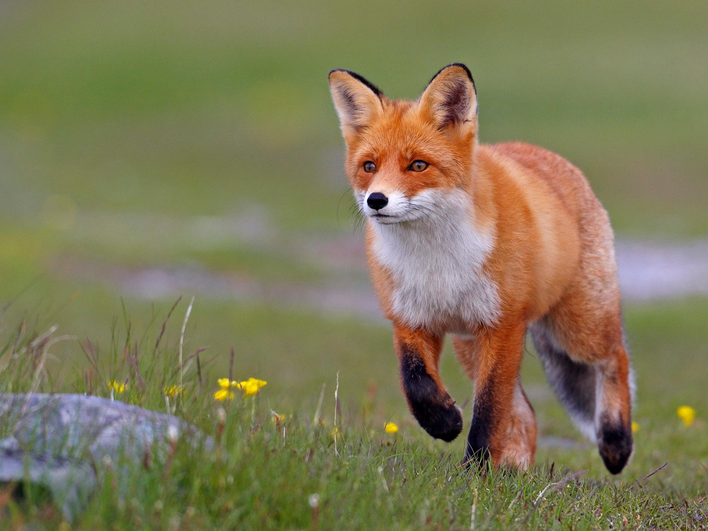

Tiere des Waldes

Der Fuchs
Nahrung: Füchse essen kleine Säugetiere, Insekten und Früchte.
Lebensraum: Füchse leben in Wäldern, Wiesen und in der nähe von Städten in Europa, Nordamerika und Nordasien. Sie leben als Einzelgänger.
Eigenschaften: Füchse sind schlaue Tiere. Sie sind sehr anpassungsfähig und Nachtaktiv. Während des Tages verstecken sie sich im Unterholz. Mit anderen Füchsen treffen sie sich nur während der Paarungszeit.